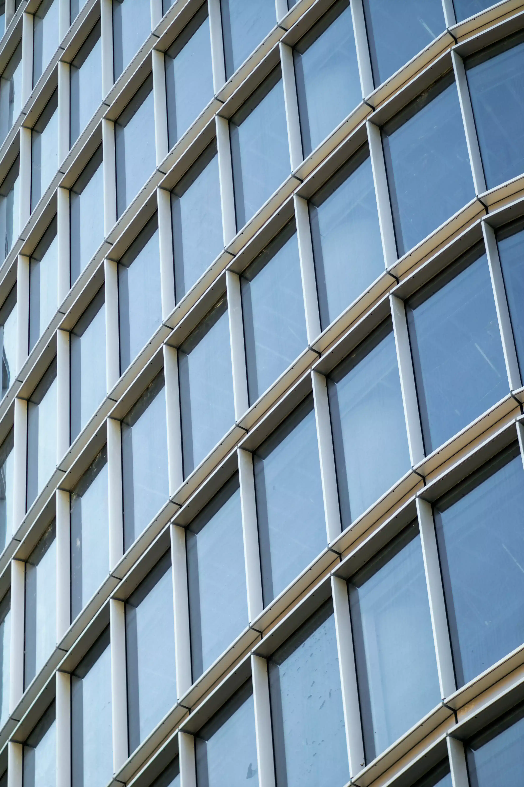

We thrive at the intersection of challenge and opportunity. When you've been in the industry as long as we have, you tend to learn a lot. Our experience with complex architecture and construction styles has made us the leading façade contractor in BC.
We design better